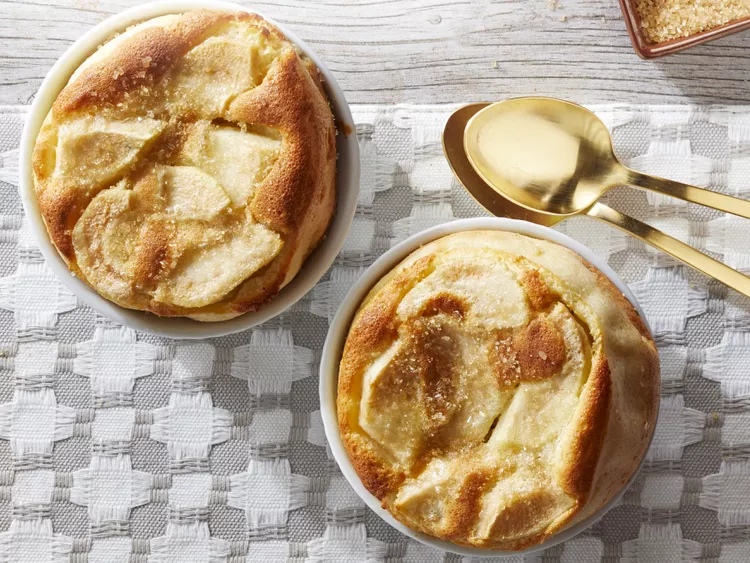

Pear Clafouti

Description
This light clafouti is a snap to put together and pairs well with ice cream.
Ingredients
- 4 eggs
- ½ cup white sugar
- 2 teaspoons vanilla extract
- ⅛ teaspoon salt
- 1 cup whipping cream
- ½ cup flour
- 2 pears - peeled, cored, and chopped
- 2 tablespoons coarse sugar, such as turbinado
Steps
- Preheat oven to 325 degrees F. Generously grease six 3/4-cup souffle dishes or six 6-ounce custard cups.
- Beat together eggs, white sugar, vanilla, and salt in a large bowl with an electric mixer on medium speed until light and frothy, about 5 minutes. Add whipping cream, then flour; beat until mixture is smooth.
- Divide half of batter among prepared dishes, then spread two-thirds of pears over batter. Pour in remaining batter and top with remaining pears.
- Bake 30 minutes, then rotate pan and sprinkle each clafouti with 1 teaspoon coarse sugar. Continue baking until puffy and lightly browned and a knife inserted off-center comes out clean, about 10 minutes more. Cool on a wire rack 10 minutes. (Clafoutis will fall as they cool.)